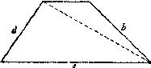

如果我们的工作有进展，有事情可做，有新内容要审查，我们的注意力就
会集中，兴趣盎然。但如果工作没有进展，我们的注意力就会松懈，兴趣索然。
一旦我们对问题感到疲劳，我们思想开小差，就会有完全丢失该问题的危险。
为了避免这种危险，我们必须给自己提一个有关这个问题的新问题。
新问题展现了接触我们以前知识的新可能性，它使我们作出有用接触的希
望死而复苏。通过变化问题，显露它的某个新方面，新问题将重新使我们的兴
趣油然而生。
(4)例子。已知棱台的底面是正方形。下底的边为a，上底的边为b，棱台
的高为h，求棱台的体积。
这问题可向熟悉棱柱与棱锥体积公式的班级提出。如果学生不能用他们自
己的想法前进，教师可以从变化问题的已知数开始。我们现在从a>b的棱台开始。
当b增加到与a相等时会出现什么情况?棱台变成一个棱柱，而体积成为 a 2 h。当
b减小到等于0时会出现什么情况?棱台将成为一个棱锥，而其体积成为a 2 h/3。
这种已知数的变化，首先可以引起对问题的兴趣。其次，它可以提示我们
去以这种或那种方式利用上面所提到的关于棱柱与棱锥的结果。无论如何，我
们已发现了我们最后结果的明确性质；最终的公式必须是这样，当 b=a 时，它化
简成a 2 h，当 b=0 时，化简成a 2 h/3。预见到我们所打算求的结果具有什么性质这
是一大长处。 这种性质可以提出有价值的建议，而在任何情况下，当我们已
经找到最后公式时，我们可借助这种性质来检验公式。这样，我们就预先回答
了下述问题：“你能检验这结果吗?”[参见“你能检验这结果吗?”一节第(2)
点]。
(5)例子。已知梯形的四个边a，b，c，d。作出此梯形的图形。
我们令a为下底，c为下底；a与c平行但不相等，而b与d不平行。如果没有
别的念头出现，我们可以从变化已知数据开始。
我们从一个 a>c 的梯形开始。当c减小到变为0时发生什么情况?梯形退化成
三角形。三角形是一个熟悉而又简单的图形，我们能用各种数据作图；把这个
三角形引进我们的图中可能会有某些好处。我们只引入一根辅助线，梯形的一
根对角线，便引进了这个三角形(图21)。但我们审查这个三角形时，但我们发
现它几乎没有什么用处；我们已知其两边a与d，但我们应该有三个数据才能作
图。
图21